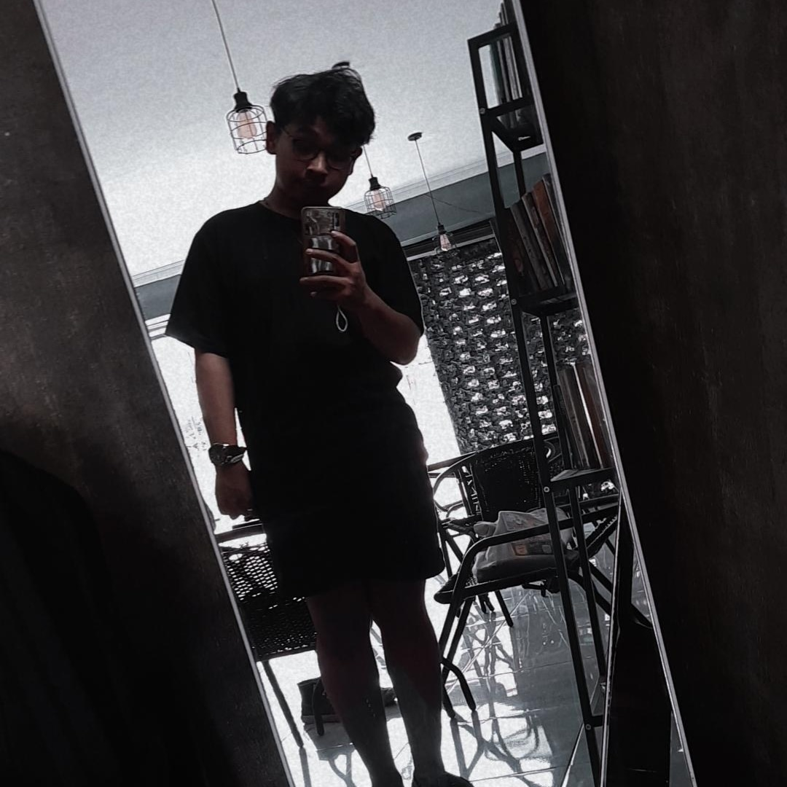

Koala_tidur adalah web hasil dari buah tangan Muhammad Farhan yang ditujukan untuk memenuhi salah satu Tugas dari matakuliah Pemrograman web 1. Yang berisi tentang musik kesukaan saya.
Mayday Parade is an American rock band from Tallahassee, Florida. Their debut EP Tales Told by Dead Friends was released in 2006, and sold over 50,000 copies without any label support. In July 2007, Mayday Parade released their debut album A Lesson in Romantics. After signing to Fearless in 2006, the band also signed onto a major label with Atlantic in 2009. Their second studio album, Anywhere but Here was released in October 2009[1] and their third album, entitled Mayday Parade, was released in October 2011. Mayday Parade's fourth album, titled Monsters in the Closet, was released in October 2013. Their fifth album, titled Black Lines, was released October 2015.[2] In April 2018, the band signed to Rise Records and released their sixth studio album Sunnyland on June 15, 2018. Their seventh studio album What It Means To Fall Apart, was released in 2021.
My Chemical Romance (commonly abbreviated to MCR or My Chem) is an American rock band from Newark, New Jersey. The band's current lineup consists of lead vocalist Gerard Way, lead guitarist Ray Toro, rhythm guitarist Frank Iero, and bassist Mikey Way. They are considered one of the most influential rock groups of the 2000s and a major act in the pop punk and emo genres, despite the band rejecting the latter label.[1] Founded on September 12, 2001, by Gerard, Mikey, Toro, and drummer Matt Pelissier (and later joined by Iero), the band signed with Eyeball Records and released their debut album, I Brought You My Bullets, You Brought Me Your Love, in 2002. They signed with Reprise Records the next year and released their major-label debut, Three Cheers for Sweet Revenge, in 2004. Shortly after the album's release, Pelissier was replaced by Bob Bryar. The album was a commercial success, attaining platinum status over a year later. The success of the band's previous albums was eclipsed by that of their 2006 rock opera concept album, The Black Parade, which was a major commercial success, with lead single "Welcome to the Black Parade" topping the UK singles chart. The album solidified the band's following, despite negative coverage in the Daily Mail generating controversy. The band's fourth studio album, Danger Days: The True Lives of the Fabulous Killjoys, was released in 2010. Bryar departed the band prior to the release of the album, and in 2012, they added touring keyboardist James Dewees. In 2012 and 2013, the band released a series of singles they had recorded in 2009 under the collective title Conventional Weapons. My Chemical Romance announced its breakup on March 22, 2013.[2] In 2014, a greatest hits album titled May Death Never Stop You was released[3] and a tenth-anniversary reissue of The Black Parade was released in 2016. On October 31, 2019, the band announced a reunion show, which took place in Los Angeles on December 20, 2019.[4] In January 2020, they announced additional shows and a Reunion Tour, which commenced in 2022 after a two-year postponement due to the COVID-19 pandemic.
Bring Me the Horizon (often abbreviated as BMTH) are a British rock band, formed in Sheffield in 2004. The group currently consists of lead vocalist Oliver Sykes, guitarist Lee Malia, bassist Matt Kean, drummer Matt Nicholls and keyboardist Jordan Fish. They are signed to RCA Records globally and Columbia Records exclusively in the United States. The band released their debut album Count Your Blessings in 2006. Upon release, the album's deathcore sound polarised listeners, and was largely met with critical disdain. The band began to break away from this sound with their second album Suicide Season (2008), which was considered a creative, critical and commercial turning point for the band. Bring Me the Horizon released their third album, There Is a Hell Believe Me I've Seen It. There Is a Heaven Let's Keep It a Secret., in 2010, propelling them to greater international fame, whilst incorporating influences from classical music, electronica and pop. Their major label debut, Sempiternal, (2013) achieved Gold certification in Australia (35,000) and Silver in the United Kingdom (60,000). That's the Spirit (2015) debuted at number two in the UK Albums Chart and the US Billboard 200.[1][2] Their sixth studio album Amo (2019) became their first UK chart-topper. The same year, the band also put out the commercial release, Music to Listen To... (2019). The following year, the band released Post Human: Survival Horror (2020), the first in a planned series of four projects under the Post Human name. The band have also released two extended plays and two live albums. They have received four Kerrang! Awards, including two for Best British Band and one for Best Live Band, and have been nominated for two Grammy Awards. The band has sold over 4 million records worldwide, and have topped the UK Rock & Metal Singles Chart with songs such as "Throne", "Drown, "Mantra" and "Parasite Eve".[3] The style of their early work, including their debut album Count Your Blessings, has been described primarily as deathcore, but over the course of several albums, the band has shifted its style and moved in a more melodically-oriented direction by combining their approach to metalcore with elements of electronica, pop and hip hop.[4][5]
NAMA: Muhammad Farhan Fadhillah
KELAS:IF-06
NIM:10122213
